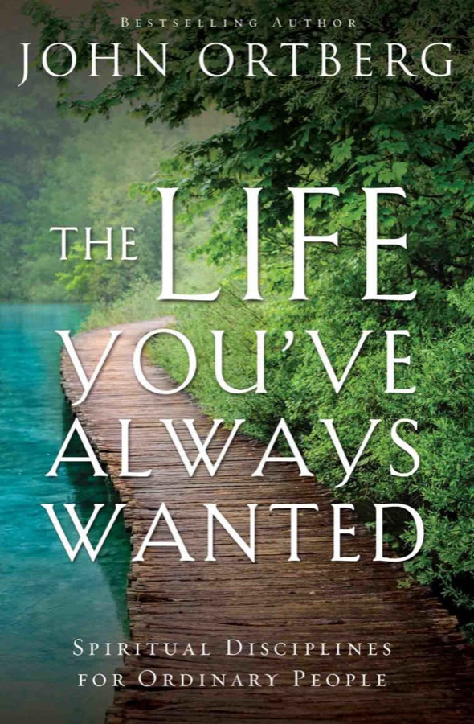

Spiritual disciplines for ordinary people
Ortberg's book on how ordinary people actually change. Change comes from training rather than trying harder: you arrange your days around a few practices, and those practices make room for God to form you into the person you were meant to be. It works through ten of those practices, from celebration to suffering, with stories, jokes and exercises.

The book opens with an honest confession: "I am disappointed with myself." Some of it is trivial: Ortberg can't do home repairs and has no financial wizardry. Some is neurotic, like caring what strangers think. Some of it runs deep. At night he looks in on his sleeping children and thinks of the father he wanted to be, then remembers how the day really went. He yelled at his daughter for spilling cherry punch, "simply because I'm big and she's little and I can get away with it." He still loves God so little and sins so much, and he can't pray for long before drifting into revenge or grandiose fantasies.
Popeye's "I yam what I yam" sums up the human condition: honest, but resigned, with no expectation of change. Ortberg reads the word dis-appointment literally. We are missing the life we were appointed by God to live, and we have dis-appointed God by putting ourselves in his place. But that is not all we are. At the burning bush, Moses said he was a slow-tongued nobody. God answered, in effect, "You are what you are, but you are not yet what you will be. I will be with you." Then he gave his own name: "I am what I am." Moses' whole calling turned on his willingness to "turn aside" and pay attention.
The book's key word is the Greek morphoo, the inward formation of a person's essential nature, used for an embryo growing in the womb. Paul uses it ("until Christ is formed in you"), and two relatives of it: summorphizo, being conformed to Christ's image, and metamorphoo, being transformed by the renewing of the mind. At one church Ortberg started a little liturgy. He would say "It's morphing time," a line borrowed from the Power Rangers, and the congregation would answer "We shall morph indeed." When morphing happens, he says, "I don't just do the things Jesus would have done; I find myself wanting to do them."
Spiritual life is not one slice of life next to finances and work. "God is not interested in your 'spiritual life.' God is just interested in your life." The goal is to live as Jesus would in our place: to see, think and feel what he would through our own temperament and history.
“There are no ordinary people. You have never talked to a mere mortal.”C. S. Lewis, quoted in chapter 1
The proof that this can happen is Mabel. Tom Schmidt met her in a grim state-run convalescent hospital. She was 89, blind, nearly deaf, and her face was half eaten by cancer. She had been bedridden there, alone, for 25 years. When he gave her a flower for Mother's Day, she asked if she could give it to someone else, and then held it out to a patient: "Here, this is from Jesus." She could recite whole passages of Scripture and hymns from memory. When he asked what she thought about all day, she said: "I think about my Jesus... He's been awfully good to me in my life, you know... I'm one of those kind who's mostly satisfied." For anyone willing to turn aside, Ortberg says, her hospital bed became a burning bush.
"Hank" went to church his whole life and stayed sour. His native tongue was complaint, and he ran "a ministry of cranial downsizing." When a deacon asked if he was happy, he said "Yeah" without smiling. "Well, tell your face." When he was told to stop complaining to visitors about the loud music, he called OSHA, and a federal agent turned up to measure the decibels. Hank's children didn't know him. His son never told him how he met his wife, because it was at a dance.
The worst part, Ortberg says, was that nobody was surprised. The church expected Hank to hold the right beliefs, attend, give, pray and avoid certain sins. Nobody expected him to become more loving and joyful each year. "We would have been surprised if it did!" C. S. Lewis's line applies: we are "far too easily pleased," like a child who keeps making mud pies because he can't imagine a holiday at the sea.
When real change doesn't happen, we settle for pseudo-transformation. "If we cannot be transformed, we will settle for being informed or conformed." Groups use boundary markers: highly visible, fairly superficial practices that tell insiders from outsiders, like the hippie's VW van or the yuppie's Rolex. In the first century these were circumcision, food laws and the Sabbath. In Ortberg's church, the pastor could be consumed with pride and keep his job, but if he smoked one Camel after the service, he'd be gone by the evening service. His Christian college still banned jazz on campus while punk was fine, and it locked the tennis courts on Sundays but left the volleyball court open. Jesus ignored the boundaries and pointed to the centre: love God, love people. That is why tax collectors and prostitutes were entering the kingdom ahead of the religious. "The 'righteous' were more damaged by their righteousness than the sinners were by their sin."
Imagine the US Olympic Committee knocks on your door: out of 200 million people, the computer has picked you to run the marathon. You may be gripped by the dream, but you still can't run a marathon by trying really hard. You can only get there by arranging your life around training. Ortberg calls this "the single most helpful principle I know regarding spiritual transformation," and credits Dallas Willard's The Spirit of the Disciplines.
After a sermon on patience he would wake up on Monday determined to be patient with a three-year-old, and he would fail. Practising scales for years is the easy way to play Bach. Walking onto a concert stage without practice is the hard way. Paul told Timothy to "train yourself in godliness." Athletes at the Isthmian Games in Corinth had to complete ten months of strict training or be disqualified.
Any activity I can do by direct effort that will help me do what I cannot now do by direct effort.
Any activity that can help me gain power to live life as Jesus taught and modeled it.
Someone who can do the right thing at the right time in the right way with the right spirit. Not a rigid, chart-making, gold-star-loving early riser.
Disciplines are not a barometer of spirituality. They are to life what calisthenics are to a game: nobody gets bonus points for free throws in practice. If a practice makes you less loving, drop it. They are not necessarily unpleasant: if you train for a pie-eating contest, you eat pie, and if you train for joy, some practices will be delightful. And they are not a way to earn God's favour. They are means of grace, and they exist for our sake.
Frog and Toad show why willpower fails. They can't stop eating cookies. Frog boxes them, ties the box and puts it in a tree, and finally throws them to the birds. "Now we have no more cookies," says Toad. "Yes, but we have lots and lots of willpower." "You may keep it all. I'm going home to bake a cake." Alcoholics Anonymous is built on the same insight: admit willpower isn't enough, then arrange your life around practices that do what willpower can't.
To pick the right practices, work backward. What does life in the kingdom look like? What stands in the way? What practice, experience or relationship would help with that? Ortberg once spent a day trying to love well and found he was too tired. So, "as unspiritual as it sounds," one of his disciplines became more sleep. Elijah got two long naps before meeting God on Horeb, and the disciples fell asleep in Gethsemane. "For some of you, perhaps the single most spiritual thing you could do right now is to put this book down and take a nap."
And it starts with a decision. Nobody drifts into a life of training. A former Mr. Missouri contestant said of physique models: "That look is what they do for a living. It's 24 hours a day, 7 days a week." (When an actor kept losing his shirt in a movie, Ortberg's wife Nancy looked at the screen, looked at him, and said: "You know, I'm just not attracted to well-built men.")
Doing what I shouldn't: boasting, overeating, gossip.
Fasting, solitude, silence, secrecy: strengthen the not-doing muscles.
Not doing what I should: failing to love, encourage, serve, rejoice.
Worship, study, fellowship, giving, celebration: strengthen the doing muscles.
Joy is the serious business of heaven. (C. S. Lewis)
After a bath, his daughter Mallory ran in circles singing "dee dah day, dee dah day." Ortberg told her to hurry. She asked "Why?" and he had no answer. He had nowhere to be. So he did the dance with her ("pretty good for a man my age"). He realised he divides his minutes into "living" and "waiting to live," and that boredom is, in Walker Percy's phrase, "the self stuffed with the self."
"God is the happiest being in the universe" (Willard). Chesterton imagines God saying "Do it again" to the sun each morning, because "our Father is younger than we." Ortberg rewrites Genesis as if God worked like us: "It'll have to do," a flat earth that looks like Idaho, and "Thank Me, it's Friday." Jesus said "that my joy may be in you." The problem isn't that we're too happy for God's taste, but that we're not happy enough. Joylessness may be the sin the church tolerates most. "Televangelists don't get canceled for displaying too much of it."
Joy is strength ("the joy of the Lord is your strength," Nehemiah). Willard argues that an unsatisfying life makes sin look good, which gives Ortberg a key line: we must arrange life so that sin no longer looks good to us. Celebration is the opposite of hedonism. Hedonism needs more and more for less and less; celebration lets you enjoy today something you wouldn't even have noticed yesterday. When his friend Chuck ("Chemo-Man") was told his cancer was back, and the next morning learned the lab had switched his results, he couldn't stop hugging his kids. Every tick of the clock is a gift.
Joy is a learned skill, and you are responsible for your own. It's often strongest near suffering. Bonhoeffer in Flossenbürg "spread an atmosphere of happiness... and profound gratitude for the mere fact that he was alive." Joy in this world is always "in spite of": Barth's "defiant nevertheless." In Robert Fulghum's story, a bride threw up on the wedding party in the middle of the ceremony, and ten years later the mother of the bride threw a party to rewatch the tapes. In spite of the mess, the bride got the groom.
People nowadays take time far more seriously than eternity. (Thomas Kelly)
Newly in Chicago, Ortberg phoned his wisest mentor and asked what he needed to be spiritually healthy. After a long pause: "You must ruthlessly eliminate hurry from your life." Ortberg wrote it down and asked what else. Another pause: "There is nothing else." Jung: "Hurry is not of the devil; hurry is the devil." The danger isn't that we will renounce our faith but that we will be so rushed that we settle for a mediocre version of it, skimming our lives instead of living them.
In the 1960s, experts told Congress that technology would soon give people too much free time. Instead we buy anything that promises speed: two-in-one shampoo, Domino's ("We don't sell pizza, we sell delivery"), an emergency room that guarantees you'll be seen within 20 minutes. We have become the Red Queen, running to stay in place. Hurry sickness shows up as speeding up daily activities, multitasking, clutter, superficiality and, most seriously, an inability to love. "Love and hurry are fundamentally incompatible." Lincoln, with only a few books, "read less and thought more than any man in his sphere." We have "traded wisdom for information" and "want to microwave maturity." Sunset fatigue means the people we've promised most to get our leftovers. Jesus was often busy, but never hurried. "Hurry is not just a disordered schedule. Hurry is a disordered heart."
Solitude is "the furnace of transformation." Jesus began and ended his ministry in it. It is the one place where we are free from the forces of society that otherwise shape us: the boiling frog, and the mice that need a dose of amphetamine twenty times smaller to die when they are in a group. ("In groups they go off like popcorn.") At its heart solitude means not doing something. One man brought books, tapes, CDs and a VCR to his first retreat. "In solitude I get rid of my scaffolding" (Nouwen). Ortberg's first attempt was mostly wandering, between "anger fantasies" and success fantasies "that would make Narcissus blush." Brother Lawrence consoled him: "I realized I would always be a failure at prayer; and I've gotten along much better ever since."
Ortberg aims for a day alone each month and a couple of retreat days a year. Francis de Sales says a clock must be wound twice a day and taken apart once a year for cleaning, and so must the heart.
The only football play named after prayer is the last one: the Hail Mary.
We pray when we're desperate. God is humble enough to accept that, but crisis prayer can't sustain a life, and it reveals what we really think: that prayer doesn't change anything. In Revelation 8 there is "silence in heaven for about half an hour" while the prayers of the saints rise like incense, and then things happen on earth. "Prayers of real human beings interrupt heaven." Walter Wink: "History belongs to the intercessors, those who believe and pray the future into being." Abraham bargained God down from fifty to ten righteous people. "Biblical prayer is impertinent, persistent, shameless, indecorous. It is more like haggling in an oriental bazaar."
The disciples, who had prayed all their lives, still asked "Lord, teach us to pray." Prayer is learned behaviour. Merton said we will never be anything but beginners.
Prayer is "talking with God about what we are doing together" (Willard). At deathbeds, Ortberg has heard regrets about years lost to work and money, but never about time spent in prayer. A father calmed his cranky two-year-old in a mall by singing a made-up song: "I love you. I love the way you laugh. I'm glad I get to be your dad." Buckled into the car seat, the boy said: "Sing it to me again, Daddy."
We are all worms. But I do believe that I am a glowworm. (Winston Churchill)
Psychologist Milton Rokeach put three psychiatric patients who each believed he was Jesus Christ, Leon, Joseph and Clyde, into one group for two years. When one claimed God had told him he was the Messiah, another replied, "I never told you any such thing." To keep up the illusion that you're the messiah, you have to live in a universe with room for only one person. Pride is the oldest sin ("you will be like God"). It shows up as vanity, as stubbornness, and at its deepest as exclusion. Pride is "a form of antilove" and "essentially comparative in nature." The Pharisee in the temple didn't realise he was the biggest sinner in the room.
Humility isn't running yourself down. (Ortberg lists comic replies to a compliment, ending with the right one: "Smile, say 'thank you,' then be quiet.") It is "a Copernican revolution of the soul," a healthy self-forgetfulness, and it is a relief. A six-year-old playing God in a Sunday-school creation play asked out: "I'm just feeling too crazy to be God today." The trap is to stop being the prodigal and turn into the elder brother. On a diet, Ortberg silently judges people eating what he ate yesterday.
In Philippians 2, Gerald Hawthorne reads the participle causally: precisely because he was God, Christ poured himself out. Jesus' servanthood was not a disguise, as when Zeus and Hermes dressed as slaves. It revealed who God is: "the most humble being in all the universe." Jesus also put his would-be messiahs in a small group, and soon they "argued who was the greatest." AA's founder Bill W helped Dr. Bob not because he was strong but because he would drink again if he didn't. "A society of sinners helping each other."
“Every human being who has ever lived has suffered from a messiah complex — except one. And he was the Messiah.”Chapter 7
He who is alone with his sins is utterly alone. (Bonhoeffer)
The Ortbergs swapped a VW Beetle for their first new furniture, a mauve sofa. Then a red jelly stain appeared. Nancy lined up the three children, aged four, two-and-a-half and six months, and said they'd stand there until someone confessed. Mallory said, "Laura did it." Ortberg kept quiet, because he had put the stain there. He figured he would confess somewhere safe, "such as in a book I was going to write."
Plantinga notes that we barely name sin anymore: "Let us confess our problem with human relational adjustment dynamics." Our problem is not understanding forgiveness but living in it. Confession isn't for God's sake or an accounting entry. Done well, it frees us from guilt and makes the same sin a little less attractive next time.
Ordering our mental life on more than one level at once. (Thomas Kelly)
One night Ortberg woke and watched Nancy sleeping. Their whole marriage passed through his mind, and he was overwhelmed with love. Then he thought: while I sleep, God watches me like this. "I'm watching you, and I'm full of love." He can't prove it was God, and he has always been suspicious of people who speak easily about God speaking. But a personal relationship has to allow that God sometimes speaks. (He woke Nancy to tell her. "This may not have been a leading.") Lily Tomlin's line: "Why is it that when we speak to God we are said to be praying, but when God speaks to us we are said to be schizophrenic?"
Our main problem is "spiritual mindlessness." As a delivery driver, Ortberg once drove off in a Johnson Electrical Supply truck, ignoring the giant blue lettering, and only noticed when "our" truck had been stolen from the post office. Jacob at Bethel said, "Surely the Lord is in this place, and I was not aware of it," and set up a stone. Ortberg tapes the word listen to his dashboard.
Do not let your left hand know what your right hand is doing. (Matthew 6:3)
Mayor Richard J. Daley once complained, "They have vilified me, they have crucified me, yes, they have even criticized me." Many of us live with approval addiction: hurt by criticism, constantly comparing, envious of others' success, trying to impress important people. Nouwen: "A little criticism makes me angry, and a little rejection makes me depressed... I am like a small boat on the ocean." Paul calls being judged by the Corinthians "a very small thing." It mattered, but not too much: "It is the Lord who judges me." Smedes calls this "the art of living freely with our critics."
Preaching, Ortberg hears a "Sally Field voice" ("You like me! You really like me!"), especially when a visitor hands him a card that reads "Speech instructor." George Herbert Mead's "generalized other" is a mental jury box full of judges: parents, teachers, bosses, peers. And it isn't really other people at all, only what we think they think. "In your forties, you realise nobody was thinking about you anyway." David Burns points out that praise works only if we believe it: a psychiatric patient's "you are the chosen one" does nothing for us. John Quincy Adams, after all he achieved, wrote, "I have done nothing." Approval addiction shows up as comparison ("spiritual bulimia"), as deception and impostor feelings, and as resentment of the very people whose approval we crave.
Jesus' remedy is the practice of secrecy. Every so often, do something good and make sure nobody finds out. Join "Righteous Anonymous." Resign from impression management. Drop "I don't watch much TV, but..." and "I hardly studied for it." Pray for someone and tell no one. Give lavishly and anonymously. Memorise a passage and keep it to yourself. Mow a neighbour's lawn. Before a meeting full of people they wanted to impress, he and a friend agreed to mention none of their accomplishments. Good deeds done to impress lose their power to train us. The Desert Fathers said that if you want to keep the fire hot, don't open the furnace door too often.
“Do not despise your place, your gifts, or your voice, for you cannot have another's, and it would not fulfill you if you could.”Chapter 10
Purity of heart is to will one thing. (Kierkegaard)
FDA purity standards allow apple butter with up to four rodent hairs per 100 grams. ("Hot dogs: you don't want to know.") God's call to purity is a call to be "purely human." In City Slickers, Jack Palance holds up one finger: "The secret of life is pursuing one thing." James calls the opposite double-mindedness, being "like a wave of the sea." It comes in two forms, after Clifford Williams. Multiplicity is being pulled both ways, like Augustine's "Lord, give me chastity, but not yet." Duplicity is giving false reasons for what we do. A deacon who taught Sunday school confessed to the congregation that he had abused his children for years.
Ortberg lists his own "deadly feelings" from a single day: avoiding eye contact with a homeless man, resenting a clerk's English, scheming to make use of an important person, sulking over a locked door, and planning to impress his staff with a morning insight about humility. The Desert Fathers called such thoughts logismoi. We need our minds "washed by the Word." Two college roommates once competed over who could go longest without washing their sheets; after a year they called it a draw. "I have never known someone leading a spiritually transformed life who had not been deeply saturated in Scripture." The purpose is not a perfect score on heaven's entrance exam, but to be "equipped for every good work."
Asked which book he'd take to a desert island, Chesterton chose Thomas' Guide to Practical Shipbuilding. When you're stranded, you want the book that gets you home. Wesley wanted to be "a man of one book."
Above all else, guard your heart, for it is the wellspring of life. (Proverbs 4:23)
The knights' quest was the Holy Grail. Ours is a "balanced lifestyle," and time-management consultants are our Merlins. Balance is not too hard a goal; it is too slight. It slices life into a pie chart with one slice marked "spiritual." It means little to a dying person or a single mother of a disabled child. It leaves no room for sacrifice. (On holiday the Ortbergs' "balanced life" chart was mostly peach cobbler at Bob Evans.) Ortberg imagines a time-management consultant reviewing Paul's time log: lashed five times, beaten, stoned, shipwrecked three times. Shaw: "the being a force of nature instead of a feverish selfish little clod of ailments and grievances." But the answer isn't living like Herbie the race car either. "I'd rather flame out than rust out." Either way, you're out.
The real disorder is internal. Augustine: a well-ordered heart loves the right thing, to the right degree, in the right way, with the right kind of love. Gold isn't the problem when a miser prefers it to justice. A rule of life (regula, something done regularly) is the trellis for that. Paul's "whatever you do, in word or deed, do everything in the name of the Lord Jesus" means doing it in his character, as he would in your place. Ortberg greets God before getting out of bed. He thinks about the first fifteen seconds with family each morning. He drives, watches TV, does chores and fixes the jet-engine attic fan "in Jesus' name," remembering he isn't the Messiah. At work, customers are people rather than accounts, and in shops beauty is good but not the deepest good.
Pope John XXIII's youthful rule: fifteen minutes of silent prayer first thing; fifteen minutes of spiritual reading; an examination of conscience before bed with topics chosen for the morning's prayer; set times for prayer, study, recreation and sleep; and turning his mind to God through the day. Frank Laubach imagined God asking of each life: "How far will this man and that woman allow me to carry this hour?"
Perhaps his sorrow is his splendor. (Nicholas Wolterstorff)
The Los Angeles marathon had 18,000 runners, including T-bone the Clown and a thirteen-person human centipede. A race moves through pleasure (which lasts "twelve or thirteen feet" for Ortberg), then drudgery, then labour, then the wall. Races are won or lost at the wall. An old husband, asked to nibble his wife's ear as he used to, gets out of bed "to get my teeth." Gifts and IQ are partly out of our control. Endurance is the gift we can offer. "Just don't quit."
In a survey, people named suffering as the factor that had done most to form them spiritually. Yet it's the most neglected, because life arranges it for us. "Suffering always changes us, but it does not necessarily change us for the better." Ortberg walks slowly through Abraham's three-day road to Moriah. A test reveals true values, and in the Old Testament the word is used only of God's people, so testing is an act of love. Abraham went on in confusion, with doubts (he had lied and laughed his way through the whole story), and in loneliness, walking beside Isaac carrying the knife and fire while Isaac carried the wood. He didn't have perfect faith. He hung on, answering "Here I am" three times. Kierkegaard calls him the "Knight of the Absurd," not resigned like Socrates but hoping against hope. Faith here "is not doubt-free certainty; rather, it is tenacious obedience."
Ortberg doesn't hurry to the happy ending. He tells of a couple who waited twelve years for a son, until at three their answered prayer chased an orange soccer ball that bounced the wrong way off a crack into the street. Hebrews counts Abraham among those who "did not receive what was promised." Start small: the crying baby next to you on a flight, a headache you don't announce. Then pick your biggest unanswered challenge and persevere in prayer. We can trust God in the dark because he has walked there. Jesus carried his own wood, and this time no voice stopped the knife. "But then the third day came. As it will come someday for you and me. In the meanwhile, just don't quit."
“It's morphing time.”The book's last line